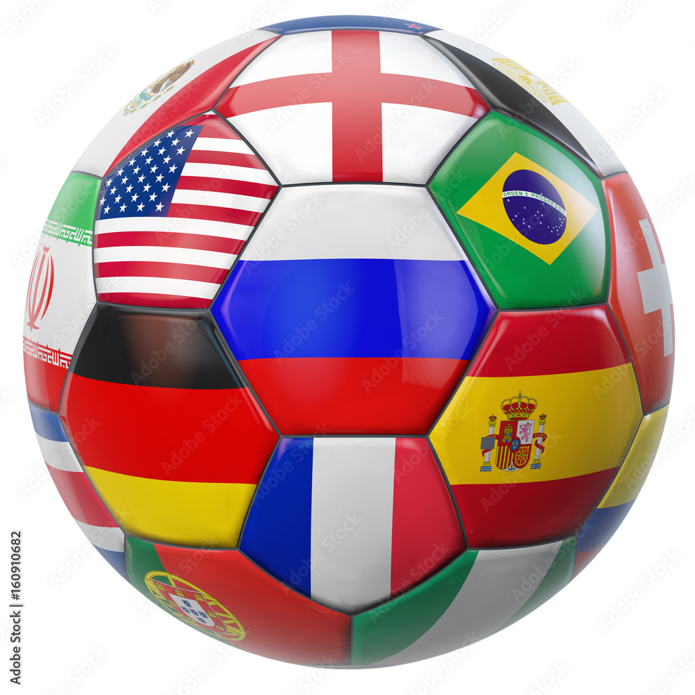

 Fútbol en el Mundo
28/01/22
Futbol en el mundo
El futbol, mas que ser un deporte en el que muchisimas personas en el mundo disfrutan de jugarlo y verlo, es un negocio en todo el mundo. Cada partido profesional es un negocio para el equipo, para la compañia que vende las entradas al estadio, para toda la gente que vende camisas afuera del estadio, para los hoteles de la ciudad donde se ospedaran los aficionados del equipo visitante y muchas otraS cosas.
El fútbol es un negocio para todos los paises del mundo hasta para la gente mas rica del mundo. El fútbol es muy importante en muchos aspectos, además de que motiva a muchisimos jovenes para que piensen en fútbol y no para que piensen en fiestas y cosas asi.
El fútbol es mas que un deporte, es una manera de aprender muchisimos valores que vas a utilizar a lo largo de tu vida, por ejemplo: diciplina, trabajo en equipo, educacion, etc... Son muchos aspectos que son muy importantes para todo lo que hagas en la vida.

 Balón de Oro
Balón de Oro
 Sitios oficiales ejemplo
Sitios oficiales ejemplo
 Premiacion Balon de Oro
Premiacion Balon de Oro Investigación
Investigación